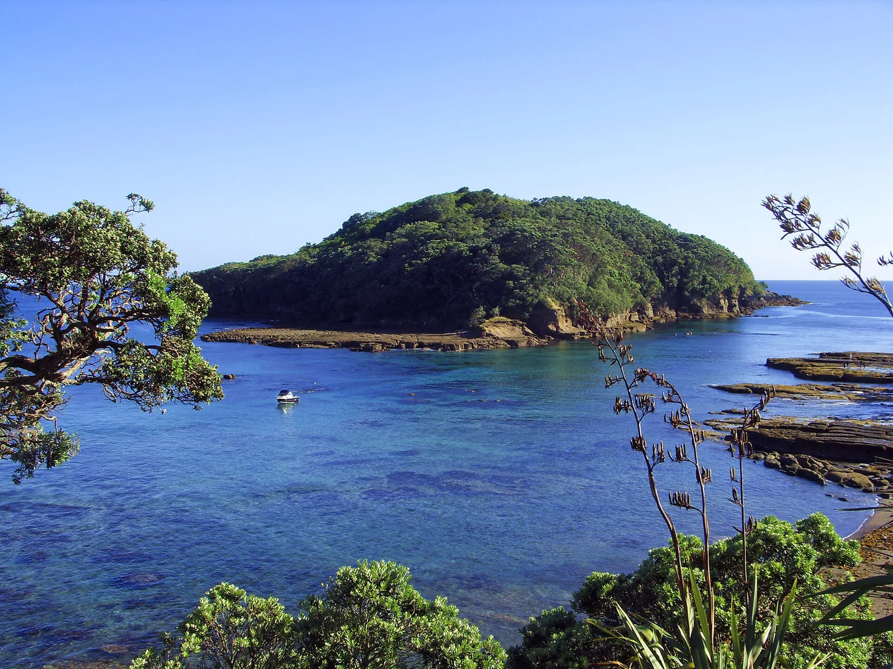

Goat Island — Leigh
Auckland, Nouvelle-Zélande · snorkeling, plongée, kayak

Plage de la réserve marine de Cape Rodney-Okakari Point, face à l’îlot de Goat Island. Des décennies de protection ont fait revenir de gros poissons tout près du bord : on les voit dès les premiers mètres au masque et tuba.
- Lieu
- Auckland, Nouvelle-Zélande
- Niveau
- Débutant
- Activités
- snorkeling, plongée, kayak
- Type d'eau
- Mer / océan
- Coordonnées
- -36.27, 174.80 (position approximative du secteur)
Dangers à connaître
- Chenal entre la plage et l’îlot fréquenté par les bateaux : reste près du bord.
- Eau fraîche : une combinaison est conseillée.
- Réserve intégrale : aucune pêche ni prélèvement.
Le conseil d'Ocean Buddy
Viens par vent faible de secteur sud-ouest : par vent d’est ou de nord, l’eau devient trouble.
Ouvrir dans Ocean Buddy Télécharger sur l'App Store
Source : Fiche Ocean Buddy · septembre 2026 · à vérifier localement.